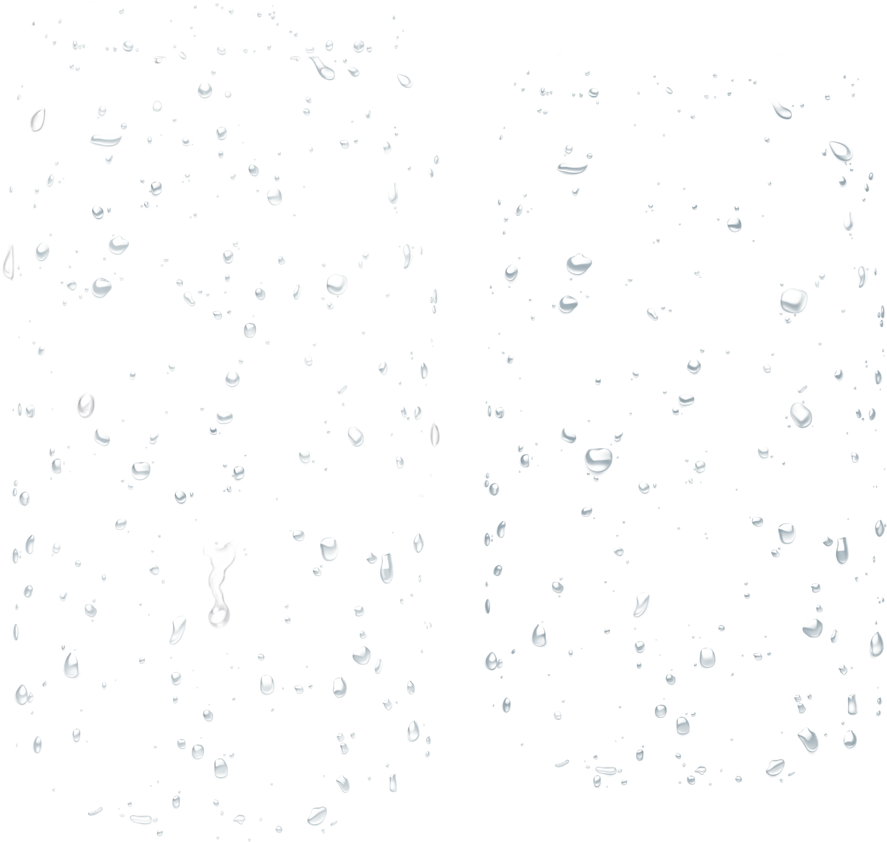

Легенда о голубой траве
И был сад на равнинах возле гор, и было в нем пять сестёр, известных своими деяниями. Имена их были: Сабтин, играющая в траве, Шидалини, ведущая путь в камнях, Бахри, обуздавшая смерть, Муртарик, умудрившая науки, и Атмасаар, окружающая заботой всякого. В саду их было пять камней, по имени каждой, и отрада витала в том саду. Многократно страдающие приходили в сад и просили помощи у сестёр. Если исцеление не было возможным, то недужный человек получал утешение в беседах и оплёскивался покоем Источника света. У дома сестер была плоская крыша, где хорошо пить отвары и говорить открыто. На заднем дворе была твердая и пустая земля, где сестры летом и зимой упражняли свои тела и дух.
В одно холодное время привезли к ним на повозке человека в грязных бинтах. Атмасаар милосердная сказала:
– Он страдает, и ему нужно больше, чем лечение.
Сабтин спокойная добавила:
– Причина его ран – не зверь, и не человек.
Муртарик, слушающая звёзды, закончила:
– Болезнь терзает его изнутри и выходит наружу язвами. Попробуем снять повязки и изучить скрытые раны.
Прикоснувшись к ране, Муртарик издала удивлённый восклик. Атмасаар принесла воду из Источника света. Грязный бинт был пропитан гноем. Под ним были белые язвы с чёрными краями. На глазах сестёр рука стала чернеть, и человек застонал. Атмасаар крикнула:
– Закрой рану этим же бинтом!
Муртарик приложила грязную тряпку на место, и человек затих, лишь продолжая слабо шевелить сухими губами.
– Это не простые бинты. – сказала Атмасаар, и Муртарик согласно кивнула. Обе они посмотрели на Сабтин – сестру всего живого. Младшая сестра простёрла руки над бинтами, и молча улыбнулась. Она что-то спрашивала шёпотом, склоняя голову то вправо, то влево, и довольно хлопала в ладоши.
– Эти бинты сделаны из голубой травы, и имя ей – лён. Трава эта растет на север от нас, в краю облаков. Она сдерживает боль этого несчастного человека. Если снять бинты, он тотчас умрёт.
– Как же это исцелить, ведь мы не можем даже промыть его раны?! – спросила Муртарик, мудрая в ночной тени. – Нужно найти эту траву и сделать из неё свежие бинты и повязку, что непреодолима для морока и диких грёз. Они потеряют свою силу.
Атмасаар кивнула:
– Скорее всего, ты права. – сказала сестра. – Его пожирает необычная болезнь. Злая воля.
Сабтин взяла повязку и отправилась со своей сестрой Шидалини по пути, который узнала у волокон голубой травы.
Позже стало известно, что возница, привёзший больного, умер от язвы, отъехав не более трех дней от сада сестёр. Однако самого больного исцелили бинты, зелье и другие целебные действия, изгнавшие злую волю и удерживающие дикие грёзы.
